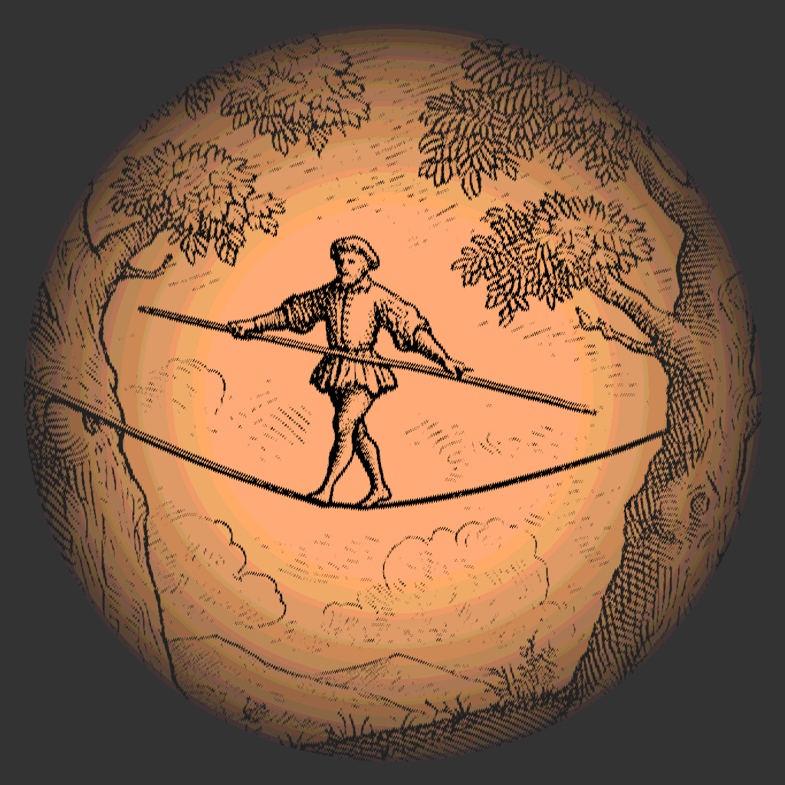

Risk as a motive for systems Engineering |

|
Date | 2024-08-18 |
|---|---|---|---|
| Tags |
Risk [noun]—A potential scenario in a project that is recorded in a risk management plan and forgotten about until it manifests as an issue.
I’m being facetious but this doesn’t seem too off the mark as a definition in many engineering organisations. Risk and risk management are fundamental to systems engineering–after all, Risk Management is one of the ISO 15288 processes which defines its purpose as:
… to identify, analyse, treat and monitor the risks continually.
Risk management as usually practiced certainly fails this definition. This proposes the question: what is risk and how should it be managed? Although following ISO 15288 and the SE handbook will get you through a project’s risk management adequately, I believe treating risk this way alienates the concept from the engineering process.
In this blog post, I’d like to explore the idea of risk and to Make the point that risk is not just something to be managed on the side of an engineering project but a fundamental part of engineering that provides a motive, measure and direction for an engineering project itself in a way that other measures cannot.
On the way, we’ll explore concepts from the scrum framework and a contender for the philosophical definition of life itself.
What is Risk?
Risk is a measure of known unknowns. We define it by identifying a set of scenarios that may happen, understanding the impact that such a scenario would cause and the likelihood that such a scenario could come about. The measure of risk is then usually defined with 3 or 5 levels based on an impact and likelihood scoring system. Risks inhabit all parts of a system lifecycle. Understanding operational risk gives us the core of Functional Safety, Cyber security and Reliability engineering (HARA, TARA and EMEA respectively, for examples). In this post, however, we’re going to focus on programme risk, in other words, risks that, if they come to fruition, cause project costs and timings to increase. What constitutes a risk to a programme? Answering this question is my fundamental break with traditional risk management.
My proposal is that every engineering artefact carries a risk.
Let me explain why.
I’ll begin with a slightly different model of engineering than most are used to—The cybernetic loop model of engineering.

Unlike the Vee model, the cybernetic loop shows the dependencies of engineering-rather than the chronology. I like to think of it as a Vee shown from above. The cybernetic loop is made of the relationships between an environment (En) and a model of that environment (Und for Understanding). Evolution is the change of the Environment with time; Learning is the process of changing our understanding based on how the environment changes; Development are activities that improve our understanding internally; and Action is changing the environment based upon our understanding.
The story of any engineering project is the assumption that the environment is problematic for some key stakeholder. The engineering project then resolves to make some action in the environment to resolve this problem. This requires learning and development to ensure that our final action solves the problem-Actions are expensive! We can think of the Development loop as a mirror to the Evolution loop. This is where we do our designing. However, as development is performed entirely on the understanding, any places where the understanding does not correspond to the Environment will be amplified. If our development loop runs away with itself for ages, when our action is finally made, it is highly unlikely that it will make the desired impact on the environment. We will be surprised.
In nature, as well as business, suprisal is expensive and dangerous. Those ‘things’ that minimise suprisal tend to last (survive) longer. This is known as the principle of Minimal Surprisal Or, less evocatively, the Free Energy Principle.
where does risk fit into all this? Thinking of it this way, risk is a measure of how likely our actions will surprise us, multiplied by the extra effort and time required to rectify the state of Surprisal. We can be surprised because every piece of information created by the development cycle is an assumption.
This idea is reflected in the Agile idea of Riskiest Assumption Tested Soonest (RATS). RATS is the simple idea that the goal of any engineering project is to validate your riskiest assumptions as soon as possible. In fact, engineering should only be the development of tests of riskiest assumption. This may seem a bit extreme at first glance, but once we’ve explored what this means, I hope that you’ll see that it’s the only sensible motive for engineering.
I mentioned earlier that all results of the development process are assumptions. Taking this universally, this means all personal, scientific, in fact, the sum total of human knowledge is assumption. A bunch of risky assumptions at that! In the engineering world, all design decisions and requirements carry around two assumptions:
This will satisfy the stakeholders’ desire
This is feasible within the laws of the land, fiscal constraints & physics
Therefore, to answer this section’s question; what is a Risk?
Everything Engineers create!
RATS as Praxis
An engineering project can often consist of 10,000-100,000 requirements, or even more! managing that many risks in a risk register would be incredibly tedious. Close related to RATS is the concept of a Minimum Viable Product. MVP is an oft-misunderstood concept, here we’re using it to mean a ‘cheap’ action in the environment that allows us to test an assumption.
Good, practical, examples for MVP’s are User stories and Use cases. User stories can be used to capture stakeholder needs and near-instantly replay them to the stakeholder for validation. Use cases add a bit of concept work to this to gain stakeholder validation on the concept.
An issue that I’ve seen play out a few times is the tendency for organisations to ritualise engineering. Most engineering companies go through the motions of an experimental prototype, Hardware-in-loop prototype, validation prototype, production prototype &c. Every industry has this procession in various forms. Often the question of which features to implement on each of the prototypes is often vaguely answered. RATS fixes this straight away. Which features go on the XP? The riskiest ones. The features that all others depend on, the primary use Cases &c.
To calculate our risk, for each feature, we can use a measure of how complex the engineering problem is—often called likelihood or exposure— and our impact of the system going to production without it or it being incorrectly implemented on a scale of the user not noticing to the system being illegal /unsafe.
There’s a meta risk of this impact/exposure score being uncorrespondent to your engineers/stakeholder’s reality—make sure they’re involved in the discussion!
Risk in Motion
One final definition for risk is that its an error bar for the project cost & timing forecasts. By their very nature, you can never say which risks will become issues, but, on aggregate, many of them will. Therefore, the faster risk is burnt down’ the sooner project forecasts can converge towards a more accurate estimate.
Thinking along these lines leads us to understanding that risk is a suitable lodestar for engineering projects. Traditionally project gateways are usually conducted by understanding which tasks have been completed, with a gateway criteria defining a completion and quality. Risk through this lens provides a ‘why’ for these criteria and also helps us understand whether to pass a gateway, postpone it or abandon the project- Using risk as an error bar, we can propose expected cost & timing overruns to the purse holding stakeholder and let them make an informed decision.
Conclusion
This post has been a brief exploration of a more integrated approach to risk than usually taken. In my own engineering Projects, I’ve been pushing and implementing such an approach to risk to help inform stakeholders, build trust and understand the prioritisation of work.
I hope that I will be able to provide some practical evidence and examples of treating risk in this manner in the future. Until then, I hope this post has helped clarify your thinking about risk, for or against my proposal-let me know if you have any thoughts below!